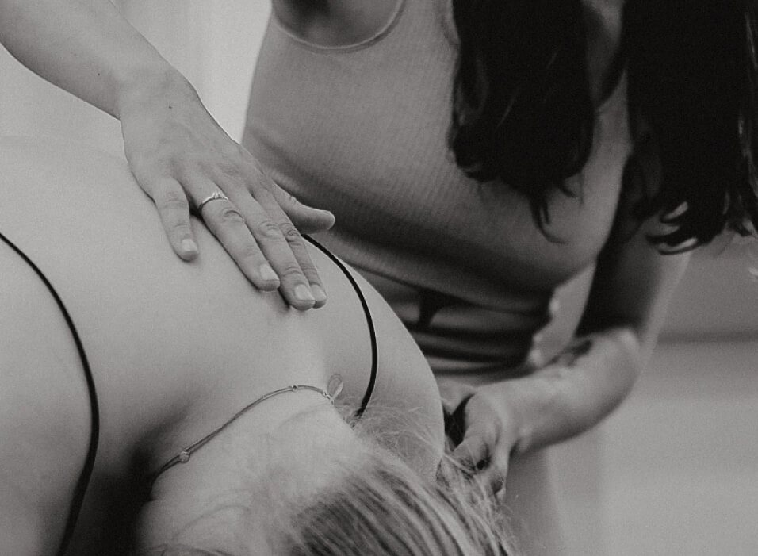

mama & baby
postnatal
Atempause gefällig?
Als Mama weiß ich: das erste Jahr zusammen mit dem Baby ist eine ganz besondere und gleichzeitig herausfordernde Zeit. Die neuen Aufgaben und die ständige Präsenz bringen Körper & Geist an ihre Grenzen – umso wichtiger ist es, regelmäßig zu sich selbst zurückzufinden. Es ist eine ideale Lebensphase, um mit dem Yoga zu beginnen, den Körper bewusst zu erleben und zu unterstützen. Die Entspannung, die du hier bekommst, wird auch abseits der Matte in deinen Alltag mit einfließen. Mitmachen kannst du als Anfängerin oder fortgeschrittene Yogini.
Du hast dein Wochenbett beendet und keine auffälligen körperlichen Beschwerden? Dann darfst du mit Yoga beginnen. Wenn du dir nicht sicher bist, lies doch in den faq’s nach.
Spüren und unterstützen – Zeit für dich & deinen Körper
Nach einer Geburt bedürfen einige Bereiche unseres Körpers besondere Aufmerksamkeit. Diese Körperregionen werden durch ausgewählte Asanas gestärkt und mobilisiert, um Schmerzen vorzubeugen. Die Rektusdiastase (Spalt zwischen den Bauchmuskeln) soll sich wieder vollständig schließen, nachdem dort Raum für das Baby geschaffen wurde. Dafür stärken wir deine Körpermitte. Der Beckenboden ist während der Schwangerschaft sehr weich geworden – wir wollen die Muskeln wieder spüren und aktivieren, um vollständige Kontrolle über diese Muskeln zurückzuerlangen. Durch das viele Wickeln und Spielen ist dein oberer Rücken über den Tag oft nach vorne gewölbt – wir schaffen in der Stunde Raum im Brust-Herz Bereich und stärken und entspannen unsere Nacken- und Schultermuskulatur. Gleichzeitig wird die Rückenmuskulatur beidseitig gestärkt, da das Tragen des Babys viel Kraft und die richtige Haltung erfordert. So können wir hier gezielt Rücken- und Nackenschmerzen vorbeugen und der einseitigen Belastung entgegenwirken. Die Gewichtsverlagerung durch das plötzlich wegfallende Kind kann unsere Wirbelsäule stark fordern – diese wird in den Asanas neu ausgerichtet und gesund und flexibel gehalten.
Anspannung und Entspannung im Gleichgewicht
Dein Baby darfst du in die Übungen einbinden. So kann auch dein Baby schon eine Menge aus unserem Kurs mitnehmen. Die neue Aktivität weckt dessen Neugier und fördert die Entwicklung. Hierfür kannst du dein Baby gerne bis auf den Body oder die Windel ausziehen – so haben die Kleinen mehr Raum für Bewegung. Der Hautkontakt zum Boden fördert zusätzlich die Beweglichkeit.
Wenn du entspannt bist, kann es dein Baby auch sein. Gezielte Asanas helfen, dein Nervensystem zu entspannen und auszugleichen. Im Alltag mit Baby ist dein Sympathikus überaktiv und du bist ständig in Alarmbereitschaft. Dieser Instinkt ist auch überlebenswichtig für dein Baby, wird aber in unserem heutigen schnelllebigen Alltag oft nicht ausgeglichen. Dafür sprechen wir im Yoga bewusst das parasympathische Nervensystem an, welches für Entspannung zuständig ist.
Das Mama & Baby Yoga bietet dir außerdem einen geschützten Raum, in dem du mit anderen Müttern in Austausch treten kannst. Viele Themen, die dir in der neuen Rolle begegnen, können Unsicherheiten und Ängste hervorrufen – das ist ganz normal. Dieser Austausch mit Anderen stellt eine gute Möglichkeit dar, aktiv Überforderungen oder auch einer postpartalen Depression entgegenzuwirken.

Für die Spontanen
Drop-In
14 €
Um im Flow zu bleiben
10er Karte
12 €
Weil du es verdienst
Ermäßigt
10 €
So viele gute Gründe
- Die regelmäßige gemeinsame Aktivität stärkt die Bindung zu deinem Baby.
- Die Asanas helfen dir im Alltag mit Baby Haltungsschäden vorzubeugen.
- Im Anschluss an den Rückbildungskurs verlierst du den Fokus auf den Körper nicht aus den Augen.
- Auf geistiger Ebene lernst du, auch in der Präsenzrolle durchzuatmen und aufzutanken.
- Der Kurs bietet dir einen geschützten Raum, um mit anderen Mamas in Austausch zu treten.
Klingt gut?
buchen

Die häufigsten Fragen zum Postnatal Kurs
Ab wann darf ich am Kurs teilnehmen?
Frühestens 40 Tage nach der Geburt. Du solltest keine besonderen oder schwerwiegenden körperlichen Beschwerden haben. Du solltest dich fit und bereit für den Kurs fühlen. Komm bitte nur, wenn du gesund bist – nicht unter Medikamenten. Bitte sprich vorher mit deiner Ärztin, deinem Arzt oder deiner Hebamme, ob du Yoga praktizieren darfst.
Ersetzt der Kurs einen Rückbildungskurs?
Der Postnatal Kurs bietet eine Ergänzung zum Rückbildungskurs, ersetzt ihn jedoch nicht.
Ich hatte einen Kaiserschnitt – darf ich Yoga praktizieren?
Im Falle eines Kaiserschnitts solltest du mindestens 8 bis 10 Wochen warten, bis du langsam wieder in die Yogapraxis kommen darfst. Dine Narbe sollte gut verheilt sein. Außerdem solltest du dir das Okay von deiner Ärztin oder deinem Arzt einholen.
Ich weiß nicht, ob ich die ganze Stunde durchhalte.
Im Postnatal Kurs ist alles erlaubt – wenn dein Körper müde wird, mach die Augen zu. Nimm für dich und dein Baby auch gerne immer einen Snack mit – so könnt ihr euch während der Stunde zwischendurch stärken. Wenn euch doch mal nicht nach Yoga sein sollte, geht ihr einfach wieder nach Hause :-)
Was ist wenn mein Kind zwischendurch Hunger bekommt?
Stillen oder die Flasche geben ist hier nicht nur erlaubt, sondern erwünscht. Auch ein Snack für die etwas Größeren darf gern mitgebracht werden. Fühlt euch einfach wie Zuhause.
Mein Baby schreit sehr viel – ist das nicht unangenehm für die anderen Teilnehmerinnen?
Jedes Baby ist hier willkommen – gerade wenn es viel weint, tut ein Tapetenwechsel für beide oft gut.
Ich möchte möglichst schnell in Form kommen – ist der Kurs der richtige dafür?
Nein! Mir ist besonders wichtig, dass du geduldig mit dir selbst bist und auf deinen Körper hörst. Er hat so viel Unglaubliches geleistet. In der Zeit nach der Schwangerschaft befindet sich viel Relaxin im Körper – dadurch haben wir ein elastischeres Bindegewebe. Das erhöht das Verletzungsrisiko, weshalb hier besondere Vorsicht geboten ist.
Darf ich auch als Papa am Kurs teilnehmen?
Der Kurs ist leider nur für Frauen. Wir knüpfen hier an die Rückbildung des Körpers nach der Schwangerschaft an, was für die Väter irrelevant ist. Außerdem ist mir hier der geschützte Raum für die Mamas zum Stillen, Wickeln und Entspannen sehr wichtig. Falls du trotzdem Lust auf Yoga hast, schau mal im Yogabüdchen vorbei. Dort unterrichte ich Donnerstags After Work & Yin Yoga. Auch die Kurse von der Studioinhaberin Claudia kann ich euch ans Herz legen.
Wo finden die Yogastunden statt?
Die Yogastunden finden in der Villa Rü im Raum 205 statt, direkt gegenüber vom Girardethaus. Da wir uns mitten in Rüttenscheid befinden, Plane genug Zeit zum parken ein, falls du mit dem Auto kommst.
Adresse
Girardetstraße 21,
45131 Essen
Raum 205
Direkt zu Google Maps
Allgemeine Infos zu meinen Kursen bekommst du hier.